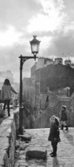
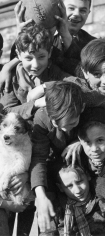
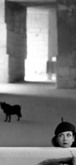
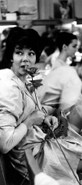
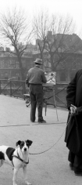
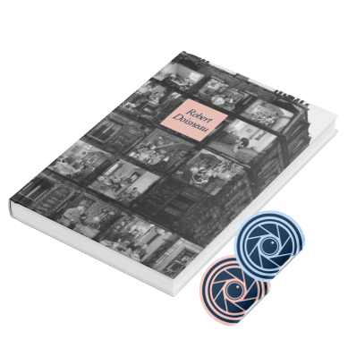

Robert Doisneau

à Belleville
Paris, 1969

de la rue des Panoyaux
Paris, 1936

aux Baux de Provence
Provence, 1991

Paris, 1958

Paris, 1953
Cosa dicono i nostri visitatori?
Intervistatore: "Ho notato che alcuni titoli sono in
contrasto con il contenuto della fotografia. Si è fatta influenzare da esse o ha preferito
guardare soltanto la fotografia?"
Visitatrice: "I titoli li guardo raramente, perché mi
concentro più sui dettagli delle foto o quadri."
Intervistatore: "Come mai ha scelto di venire a questa mostra?"
Visitatore: "Sono qui con i miei studenti per un progetto interno al
nostro percorso di studio."
Intervistatore: "C'è una fotografia che l'ha colpita?"
Visitatore: "Si, il titolo è 'Anita', perché è il nome di mia madre."
Intervistatore: "Come mai ha scelto di venire a questa mostra?"
Visitatrice: "Io, in realtà, questa mostra l'avevo già visitata a Verona,
però ho deciso di ritornare perché ritengo che vedere Doisneau è sempre una buona idea."
Intervistatore: "Come mai ha scelto di venire a questa mostra?"
Visitatrice: Doisneau è sempre stato uno dei miei fotografi preferiti, ma in
particolare negli ultimi anni è diventato più importante ancora perché, avendo fatto io
molte foto di scolari e avendo aperto un B&B all'interno di una vecchia scuola, ho esposto
alcune delle sue fotografie e quindi mi sento molto legata a questo artista."
Intervistatore: "C'è una fotografia che l`ha colpita
particolarmente?"
Visitatore: "Una che mi ha colpito particolarmente credo sia 'Cuccioli al
guinzaglio' che non avevo mai visto."
Intervistatore: "Le è venuta voglia di prendere in mano una macchina
fotografica, mettersi a fare fotografie a paesaggi o altri soggetti?"
Visitatrice: "Io sono di un'altra generazione, quindi la macchina
fotografica l'ho usata per tanto tempo. Adesso anche io sono un po' più pigra e
quindi uso più il telefonino. Mia madre addirittura faceva foto e le sviluppava lei
stessa."
Intervistatore: "Le è venuta voglia di prendere in mano una macchina
fotografica, mettersi a fare fotografie a paesaggi o altri soggetti?"
Visitatrice: "Assolutamente sì!"
Intervistatore: "Secondo me alcuni titoli sono in contrasto con il contenuto
della fotografia. Si è fatto influenzare da esse o ha preferito guardare soltanto la
fotografia?"
Visitatrice: "No, di solito guardo prima la foto. Però ho notato delle
didascalie che fanno anche sorridere rispetto al soggetto della foto.
(Foto citata: Hommages Respectueux / Omaggi rispettosi 1954)
Acquista Booklet per quando vieni a trovarci
Non dimenticare di prendere i tuoi adesivi gratuiti!
